|
|
| cephalopods text index | photo index |
| Phylum Mollusca > Class Cephalopoda > squids and cuttlefishes |
| Pygmy
squid Idiosepius sp. Family Idiosepiidae updated May 2020 Where seen? Arguably the cutest little thing on the shore, this tiny squid is commonly seen on many of our shores, among seagrasses and near reefs and rubble. Often dismissed as bits of floating rubbish, this small, well camouflaged animal is usually seen hunting alone. Features: About 1cm. Body long cylindrical, with tiny circular fins at the rear end. It is often seen floating about with its longer tentacles extended beyond the shorter arms, with a slight curl at the tips of the tentacles. It has been seen catching shrimps that are as big as the squid. The Family Idiosepiidae comprises only one genus Idiosepius that have a special glue gland on the upper body. A pygmy squid may use this gland to glue itself to the underside of seagrasses and seaweeds where it lurks in wait for prey. Like other squids, it can change colours rapidly, check out the video clip below. Sometimes mistaken for a juvenile squid. The Pgymy squid doesn't get much larger than about 1cm. What does it eat? Tiny shrimps and crabs are its main prey. It is said that that to catch shrimps, it sneaks up on a shrimp and immobilises the prey by biting through the nerve cord. |
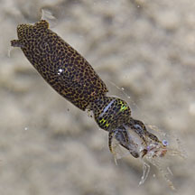 Caught a shrimp. Tanah Merah, Aug 11 |
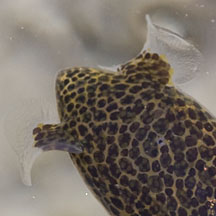 Tiny circular fins at the end of the body. |
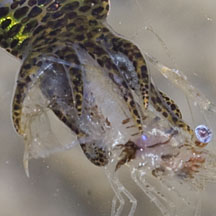 |
|
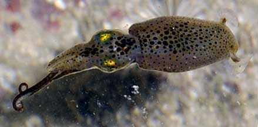 Longer tentacles extended beyond the shorter arms. Cyrene Reef, Jul 10 |
||
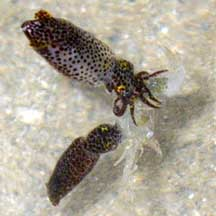 Mating tussle? 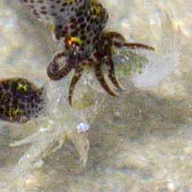 Terumbu Raya, May 10 Photo shared by Loh Kok Sheng on his flickr |
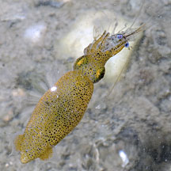 Caught a shrimp. 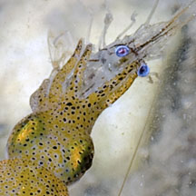 Changi, Aug 11 |
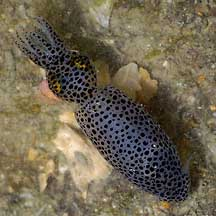 With black spots, this squid quickly changed... 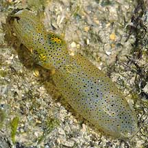 ...to a pale yellow with small black spots. Tuas, Aug 04 |
| Pygmy squids on Singapore shores |
On wildsingapore
flickr
|
| Other sightings on Singapore shores |
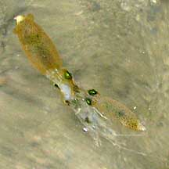 A pair quarrelling over a shrimp! Terumbu Raya, May 10 Photo shared by Geraldine Lee on her blog. |
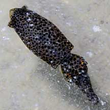 Pulau Sudong, Dec 09 |
|
pygmy squid 22Jan2011 from SgBeachBum on Vimeo. |
| Family
Idiosepiidae recorded for Singapore from Tan Siong Kiat and Henrietta P. M. Woo, 2010 Preliminary Checklist of The Molluscs of Singapore.
|
|
Links
References
|